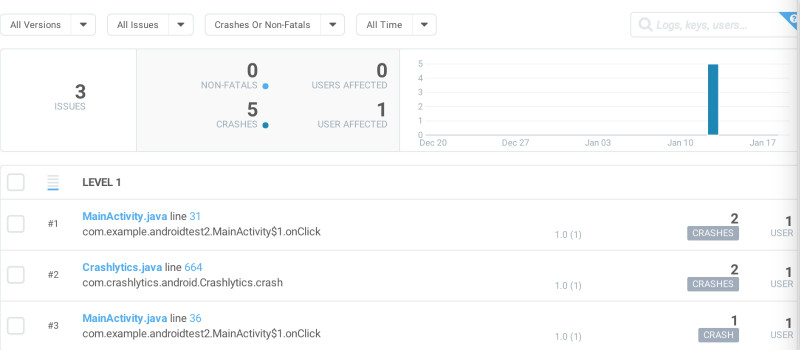
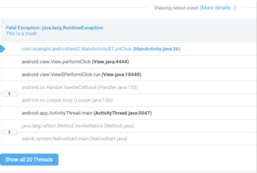
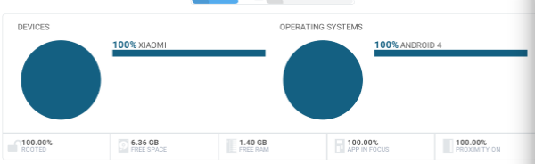

android app经常会发生一些意想不到的crash。为了及时反馈bug，我们需要一个crash收集机制，来让开发人员尽快发现问题，修改bug，完善app。
java的Thread有一个UncaughtExceptionHandler接口，该接口的主要作用是当Thread发生因未捕获的异常而突然终止时，调用处理程序。接口里有个方法：setDefaultUncaughtExceptionHandler(Thread.UncaughtExceptionHandler eh)，方法主要作用为设置当线程由于未捕获到异常而突然终止，并且没有为该线程定义其他处理程序时所调用的默认处理程序。
有些商业的
还有些开源的
其中，acra和crashlystics是用得比较多的，国内的话用友盟的也比较多。
google提供的crash report工具。github的链接戳我. 最初的版本主要是把crash信息发送到spreadsheet上，但是由于文件大小限制，新的版本将取消发送到spreadsheet这一途径。用户可以将crash信息发送到电子邮箱（个人觉得不靠谱）或者自定义的服务器端。 ACRA是可配置的，我们可以选择crash信息的发送地，是否弹出toast或者dialog提醒用户，crash信息的字段等。 ACRA crash report可选的字段有ANDROID_VERSION，PRODUCT，STACK_TRACE，THREAD_DETAILS，TOTAL_MEM_SIZE等，也可以自己定义字段CUSTOM_DATA(自定义键值对，换行分割)。详细的字段可以参见页面
服务器端代码：
public class CrashTest extends HttpSerlet {
private static final long serialVersionUID = 1L;
@Override
protected void doGet(HttpServletRequest req, HttpServletResponse resp)
throws ServletException, IOException {
}
@Override
protected void doPost(HttpServletRequest request, HttpServletResponse resp)
throws ServletException, IOException {
String platformId = request.getParameter("PLATFORM_ID");
String androidVersion = request.getParameter("ANDROID_VERSION");
String appVersionCode = request.getParameter("APP_VERSION_CODE");
String appVersionName = request.getParameter("APP_VERSION_NAME");
String deviceId = request.getParameter("DEVICE_ID");
String model = request.getParameter("MODEL");
String brand = request.getParameter("BRAND");
String product = request.getParameter("PRODUCT");
String stackTrace = request.getParameter("STACK_TRACE");
String crashDate = request.getParameter("CRASH_DATE");
String packageName = request.getParameter("PACKAGE_NAME");
StringBuilder sb = new StringBuilder();
sb.append("platformId=" + platformId);
sb.append(",androidVersion=" + androidVersion);
sb.append(",appVersionCode=" + appVersionCode);
sb.append(",appVersionName=" + appVersionName);
sb.append(",deviceId=" + deviceId);
sb.append(",model=" + model);
sb.append(",brand=" + brand);
sb.append(",product=" + product);
sb.append(",stackTrace=" + stackTrace);
sb.append(",crashDate=" + crashDate);
sb.append(",packageName=" + packageName);
System.out.println("CrashTest Post,content =" + sb);
}
}
ACRA也可以和另一个开源代码ANR-WatchDog一起用于监测ANR,看了下ANR-WatchDog的源代码，其实就是开了个线程看看5s内主线程有没有对其作出响应。然后如果没有的话就抛出异常，可以用ACRA报告ANR的堆栈信息。个人感觉在release项目加入这个有点得不偿失。 看了下源代码，基本原理是一样的，程序里设置了setDefaultUncaughtExceptionHandler。
crashlystics被广泛应用于ios和android app应用中。比如沃尔玛，paypal，yelp等。被Twitter收购之后，Crashlytics被集成在fabric中，作为其中的一个feature。在eclipse或android studio里，可以下载个插件，选择好要使用crashlystics的项目之后，它会自动导入crashlystics相关的代码和根据用户名密码生成的key。 除了没有处理的crash信息，也可以用crashlystics来发送用户已经处理的异常信息。产生的crash可以登录fabric.io从相应的项目中查看。crashlystics按一定的权重（发生的次数，用户数等）先后列出了各个crash条目，每个条目都可以看到crash发生时间线性图，device信息，各个线程的信息等。当然，也可以加入自定义的字段。
crash report

堆栈信息 
device信息

每个crash条目都有一个开关按钮，当crash被解决之后，用户可以close掉响应的crash条目。
crash信息可以导出到很多流行的社交网站或者工具平台上，比如facebook,github等。
各种不同的crash收集工具基本原理都类似。只是收集字段上有所区别。点评的客户端已经实现了crash信息收集功能，而且已经包含了主要的信息字段，感觉没必要引入第三方库。一方面，引入第三方库会加入很多不必要的功能，导致apk变大；另一方面，如果真的需要借鉴引入某些字段的话我们自己代码这边也可以获取。
Android Handling the Unexpected
ACRA
Crashlytics Kit for Android